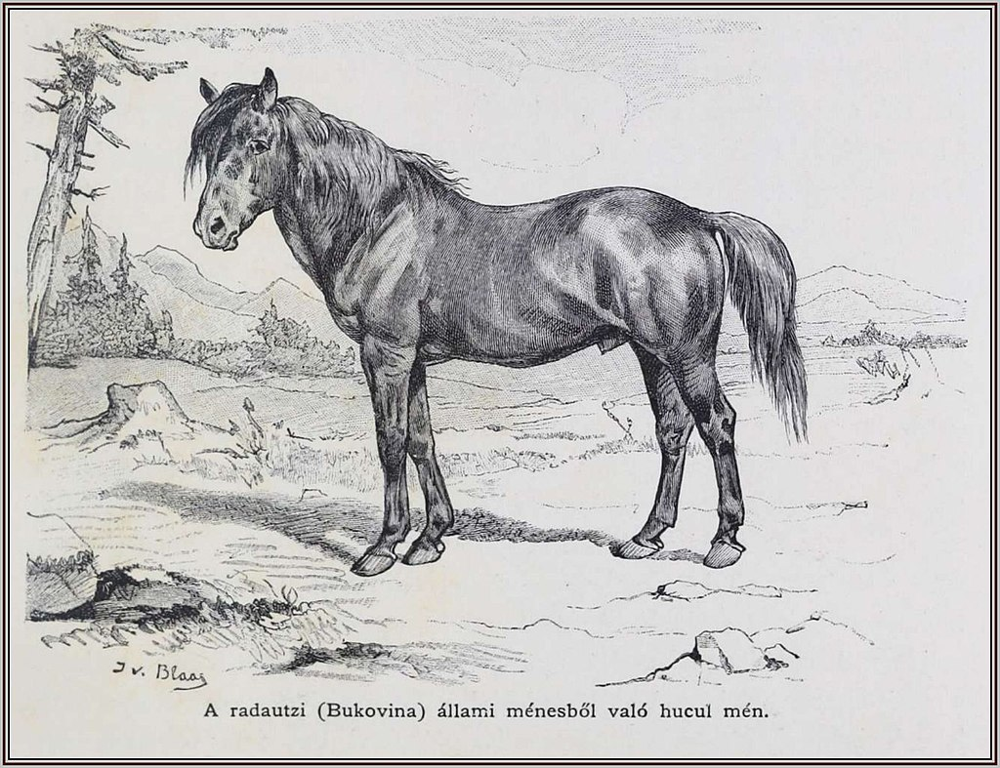
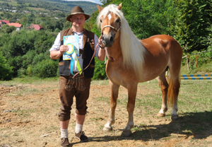

 Гуцу́льський кінь, іноді гуцу́лик, або гуцул — аборигенна гірська порода свійських коней, яка розповсюджена в Карпатах. Належить до світового генофонду. У 1979 році гуцульські коні одержали статус реліктової породи і були взяті під охорону. Очевидно, що назва породи походить від етнографічної групи гуцулів — субетносу українців, що живуть у гірських районах Івано-Франківської і Чернівецької областей та в Рахівському районі Закарпатської області.
Перша письмова згадка про гуцульського коня датується початком XVII століття (1603 рік). У творі Дорогостайського «Гіппіка» («Конярство») про нього пишуть: «спокійний, але б'є боляче». Багато вчених вважають, що гуцульський кінь є прямим нащадком тарпана — лісового і степового дикого коня мишастої масті, який довго ще мешкав у степових природніх зонах України, а зараз повністю втрачений. Такі коні, виведені у невибагливих і суворих умовах Буковинських Карпат, спочатку мали всі характерні риси своїх предків, диких коней. Їх сотнями розводили в горах у дуже суворих природних умовах. Ізольована від інших, порода розвинулася на стійких і сильних коней. Але тим, хто найпомітніше вплинув на формування різних типів всередині породи, вважається арабський кінь, який потрапив в Карпати під час турецьких воєн. Кров арабських скакунів обумовила зовнішній вигляд «гуцуликів», для якого характерна загальна сухість конструкції, міцність кінцівок, благородність голови, висока постановка хвоста.
 Розведення гуцульських коней базується на семи провідних лініях: Гроби (Hroby), Ґорал (Goral), Ґурґул (Gurgul), Оусор (Oušor), Прислоп (Prislop), Петрос (Pietrosu) та Полан. Для поширення гуцульської породи було створено «парувальний пункт» коней у Буштині, який поширює свою діяльність на Тячівський та Хустський райони Закарпатської області. Селекцією коней гуцульської породи займається фермерське господарство «Полонинське господарство». Основна мета селекції гуцульського коня в цьому господарстві поставлена на робочу продуктивність і пристосування до важких умов навколишнього середовища. Фахівці «Полонинського господарства» пішли шляхом відновлення і закріплення ключових якостей гуцульської породи в притаманних її виникненню і формуванню жорстких природних умовах. Власне цим це українське конегосподарство, яке було зареєстровано у 2001 році і отримало статус племрепродуктора з розведення коней гуцульської породи у 2004 році відрізняється від інших. Ферма в Прелуках є унікальною, оскільки коні мають можливість жити і розвиватися в умовах, в яких дана порода формувалася протягом тисячоліть. Вона знаходиться на висоті 1000 метрів над рівнем моря, між полонинами Рівна і Гостра. І весь цей час планомірної племінної роботи в підсумку дали можливість наблизитися до того стандарту породи, який існував сторіччями до того. На основі багаторічного досвіду господарства створена Школа гірського кінного туризму Олександра Ігнатенка.
Угору